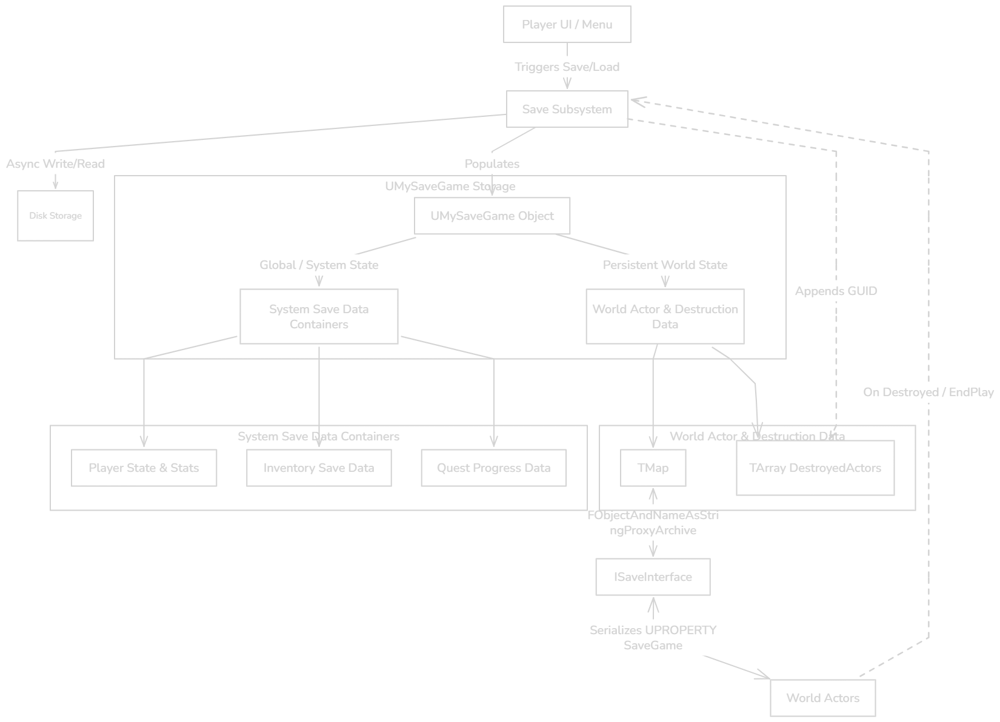

Engine Version: Unreal Engine 5.6 | Language: C++ / Blueprints
ISaveInterface): Decouples save logic from world actors, allowing any actor to serialize its state without hard dependencies or direct class casting.FObjectAndNameAsStringProxyArchive to serialize only variables tagged with UPROPERTY(SaveGame) into compact byte arrays.UGameInstanceSubsystem to log unique FGuid entries into a DestroyedActors registry, ensuring level-placed items and objects stay deleted upon reloading.UGameInstanceSubsystem to prevent frame hitches, firing dynamic delegates to notify UI widgets upon completion.Architectural breakdown showing how world components write to the UMySaveGame container during save events:

Async I/O management via UGameInstanceSubsystem, non-blocking disk writes, and USaveGame data structures.
ArchitectureDecoupled actor serialization using FObjectAndNameAsStringProxyArchive and stable level GUID assignment.
Frontend / UIDeterministic save slot binding, async progress callbacks, and decoupling UI widgets from backend disk operations.
InventoryLightweight FInv_ItemManifest structs, multi-grid mapping, and anchor-tile deduplication.
Prevents serializing dynamic or transient actors (like temporary particle spawners, projectiled hazards, or procedural props) by querying tag containers before executing memory sweeps.
// SaveSubsystem.cpp
if (Actor->Implements())
{
const FGameplayTagContainer TagContainer = ISaveInterface::Execute_GetSaveStateTags(Actor);
if (TagContainer.HasTagExact(FGameplayTag::RequestGameplayTag(FName("Save.Ignore"))))
{
return; // Skip transient actor
}
} //Integrate info about delay between 2 saves, so it doesn't create auto save every 5 seconds
Integrates seamless checkpoint saves using volume triggers and timed component events. The SaveSubsystem processes these auto-save calls asynchronously on a background thread to prevent gameplay hitches during critical transitions.